Using IDA debugger to unpack an “hostile” PE executable
Several days ago we received, from an IDA user, a small harmless executable (test00.zip; unpack twice with the password 123) that could not be debugged in IDA.
{% file src=“packed-executables/assets/test00.zip” %}
Breakpoints would not break and, the program would run out of control, as if the debugger was too slow to catch it. When we first loaded the program in IDA, it complained that it could not find the imports section. That type of situation is frequent with protected executables, packed worms etc….
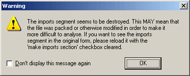
The second remarkable thing is that the entry point jumping… nowhere. Addresses marked in red usually reflect a location that IDA can’t resolve.
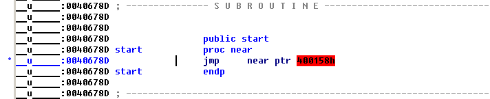
This code employs attempts to prevent the disassembly and, as a result, the default load parameters are not appropriate. This type of obfuscated code demonstrates the problems inherent to the a one-click approach.
But what if we investigate a bit further, for example by loading the file in the manual mode? In this mode the user can specify which sections of the file should be loaded. To be on the safe side, let’s load all sections. Let’s uncheck the ‘make imports section’ checkbox to avoid the “missing imports” message. We have this:
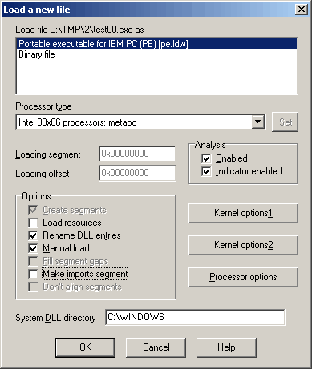
Once we have answered the questions about each section of the file we will get this listing: much better!
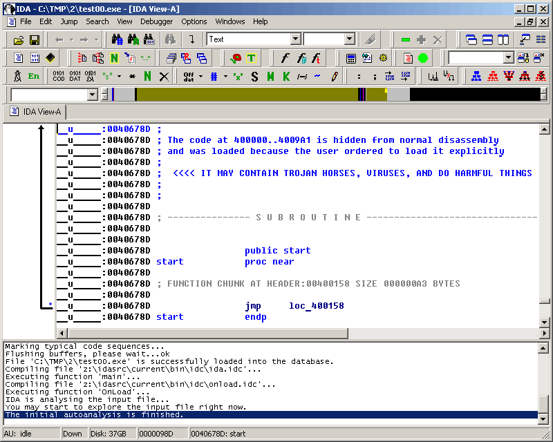
Now that we got rid of the unresolved address, we can analyze the program. The first instruction of our executable is a jump, and it jumps to the program header: loc_400158. Hmmmm, the program header is not supposed to contain any code but this program abuses the conventions and jumps to it. An interesting side effect results of the fact that the program header is read only. That could explain why breakpoints can’t be put there.
Anyway, let’s see how the program works. We see that the program loads a pointer into ESI which gets immediately copied to EBX:
HEADER:00400158 mov esi, offset off_40601C
HEADER:0040015D mov ebx, esi
(Ctrl-O converted the hexadecimal number in the first instruction to a label expression)
Later the value of EBX is used to call a subroutine:
HEADER:00400169 call dword ptr [ebx]
Calls like this are frequent in the listing, so let’s find out the function and what it does. Apparently a pointer to the function is located here:
__u_____:0040601C off_40601C dd offset __ImageBase+130h
If we click on __ImageBase, what we’ll see is an array of dwords. IDA represented the program header as an array which is incorrect in our case. We undefine the array (hotkey U), go back to the pointer (hotkey Esc) and follow the pointer again. This time we will end up at the address 0x400130 which should contain a function. We are sure of that because the instruction at 0x400169 calls 0x400130 indirectly. We press P (create procedure or function) to tell IDA that there should be a function at the current address.While the function is now on screen, we only have half of it! It seems that the person who wrote that program wanted it to obfuscate it and separated the function into several pieces. IDA now knows how to deal with those fragmented functions and displays information about the other function parts on the screen:
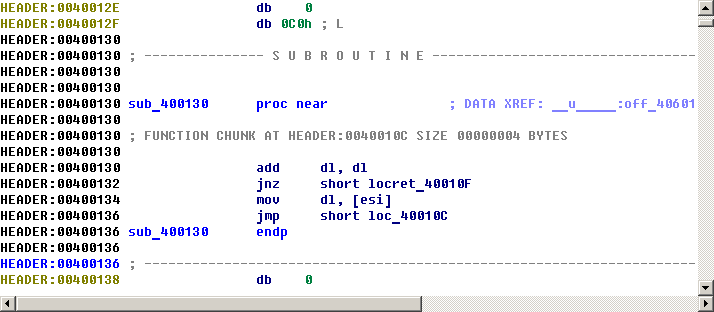
But it has only references to other parts. It would be nice to have the whole function on one page. There is a special command to help us: the command to generate flow charts of functions in IDA, it’s hotkey is F12. This command is especially interesting for fragmented functions like ours because all pieces of the function will be on the screen:
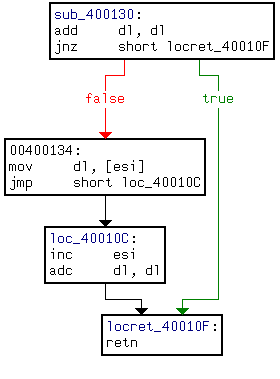
It might be interesting to display the flow chart of the main function (very long function, keep scrolling!):
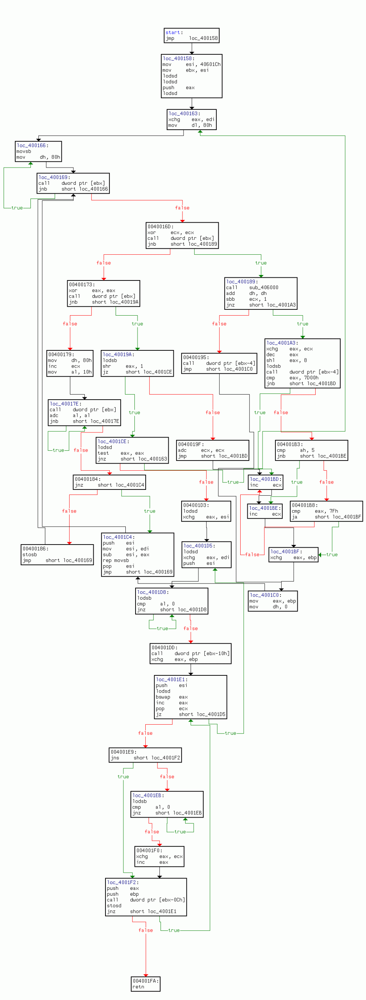
A quick glance at the flow chart reveals that there is only one exit from the function at its “ret” instruction (0x4001FA). We could put a breakpoint there and let the program run. Now, before we do that, let’s repeat that it is not a good idea to run untrusted code on your computer. It is much better to have a separate “sandbox” machine for such tests, for example using the remote debugging facilities IDA offers. Therefore, IDA displays a warning when a new file is going to be started under debugger: ignore at your own risk.
Since the breakpoint is located in the program header, and the program header is write protected by the system, we cannot use a plain software breakpoint. We have to use a hardware breakpoint: first press F2 to create a breakpoint, then right click and select “edit breakpoint” to change it to a hardware breakpoint on the “execution” event:
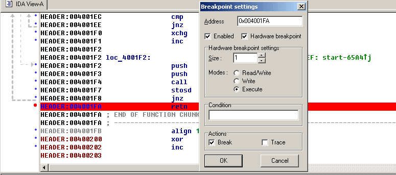
After having set the breakpoint, we start the debugger by pressing F9. When we reach the breakpoint, the program will be unpacked into the ‘MEW’ segment. We jump there and convert everything to code (the fastest way to do this is to press F7 at the breakpoint).
Now we have a very nice listing but with one major problem: it is ephemeral – as soon as we’ll stop the debugging session, the listing will disappear.
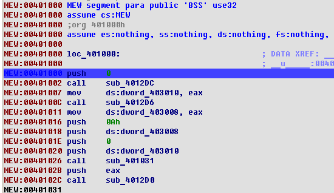
The reason is of course that the listing displays the memory content and that the memory will cease to exist when the process will die. It would be nice to be able to save the memory into the database and continue the analysis without the debugger. We will think about adding that feature into future versions of IDA, but meanwhile we’ll have to do it manually. By “manually” we do not mean to copy byte one by one on a paper, of course. We can use the built-in IDC language to achieve this.
There are two things to be saved because they will disappear when the debugger stops: the memory contents and the imported function names. The memory contents can be saved by using the following 4-line script:
auto fp, ea;
fp = fopen("bin", "wb");
for ( ea=0x401000; ea < 0x406000; ea++ )
fputc(Byte(ea), fp);
When the script has run, we will have a file named “bin” on the disk. It will contain the bytes from the “MEW” segment. As you can see, I hardcoded the hexadecimal addresses: after all, it is a disposable script intended to be run once.
We have to save the imported function names too. Look at the call at 0x401002, for example:
MEW:00401002 call sub_4012DC
If we want to know the name of the called function, we press Enter several times to follow the links and finally get the name:
kernel32.dll:77E7AD86
kernel32.dll:77E7AD86 kernel32_GetModuleHandleA: ; CODE XREF: sub_4012DCj
kernel32.dll:77E7AD86 ; DATA XREF: MEW:off_402000o
kernel32.dll:77E7AD86 cmp dword ptr [esp+4], 0
When we quit the debugger, the kernel32.dll segment will disappear from the listing along with all its names, instructions, functions, everything. We have to copy the function names before that:
auto ea, name;
for (ea = 0x401270; ea<0x4012e2; ea =ea+6 )
{
name = Name(Dword(Dfirst(ea))); /* get name */
name = substr(name, strstr(name, "_")+1, -1); /* drop the prefix */
MakeName(ea, name);
}
Now that we have run those scripts, we may stop the debugger (press Ctrl-F2) and copy back the memory contents. The “Load additional binary file” command in the File, Load menu is the way to go:
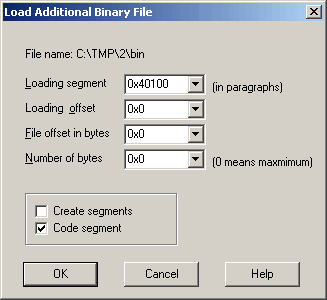
Please note that it is not necessary to create a segment, it already exists (clear the “create segments” flag). Also, the address is specified in paragraphs, i.e. it is shifted to the right by 4.
Load the file, press P at 0x401000 and voila, you have a nice listing:
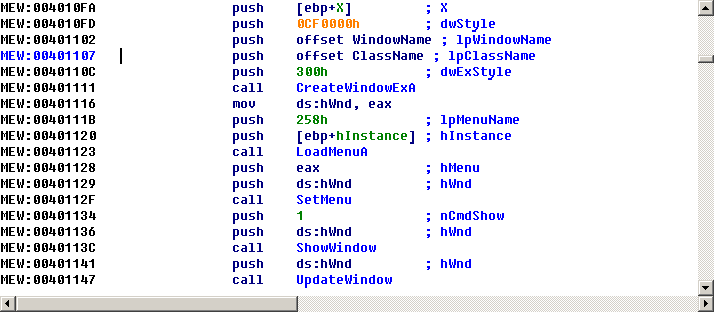
The rest of the analysis is a pleasant and agreeable task left to the reader as…. you guessed it.